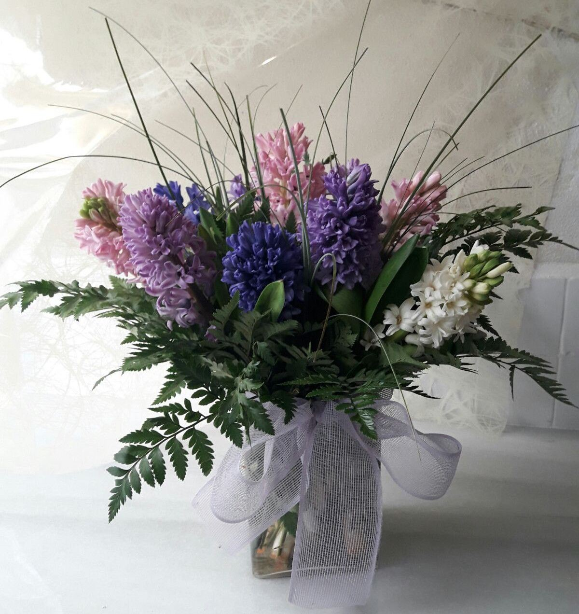
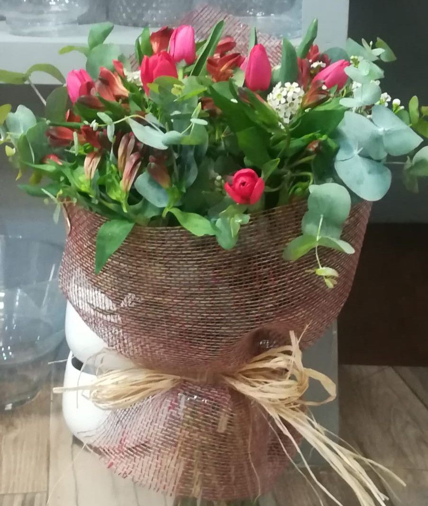
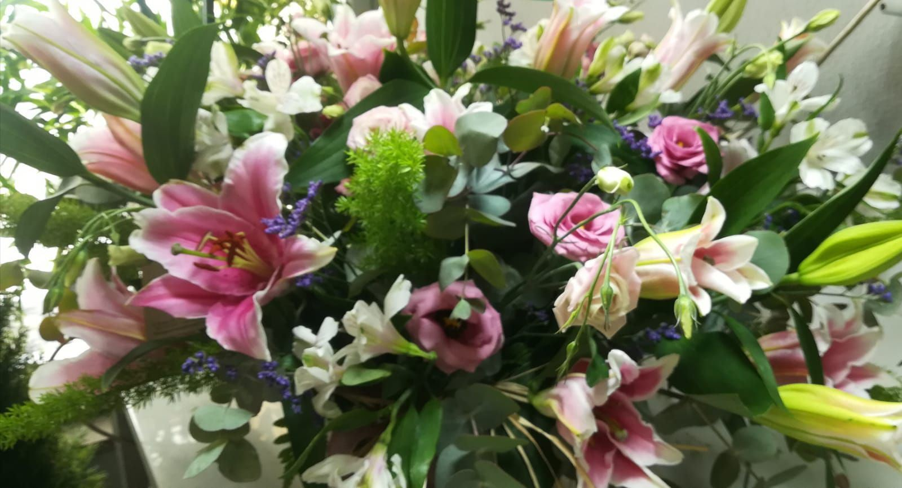
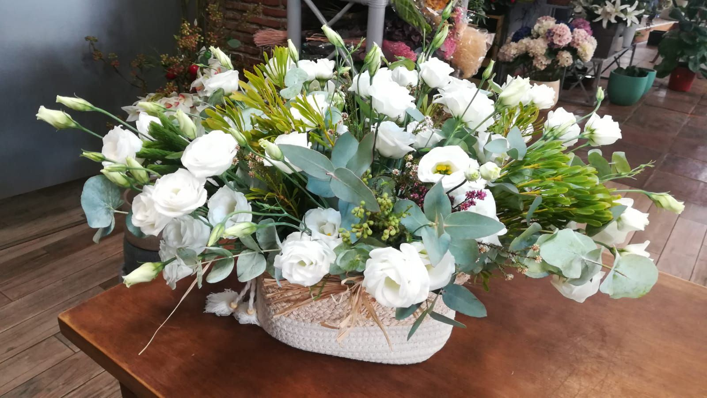
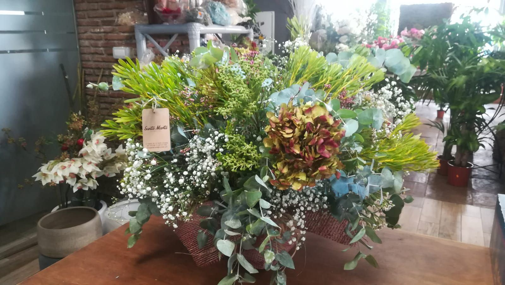
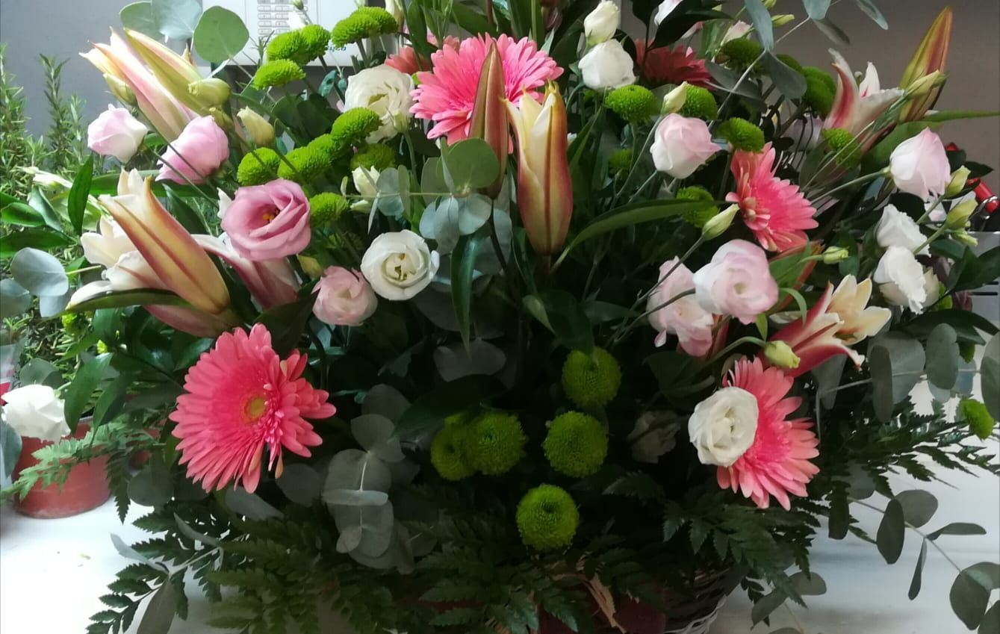
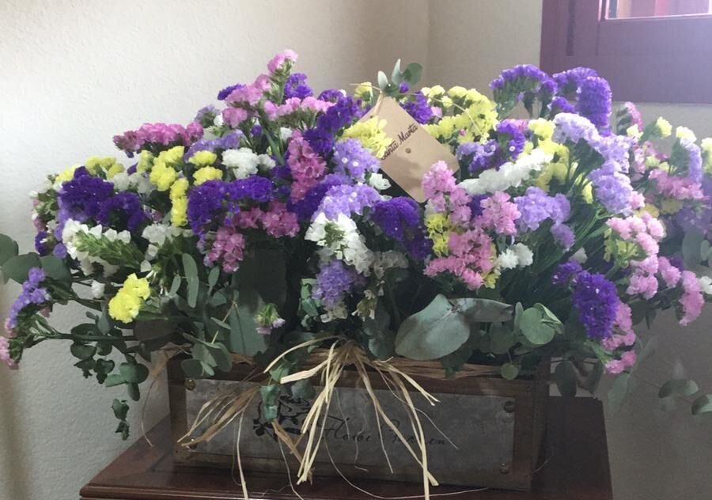
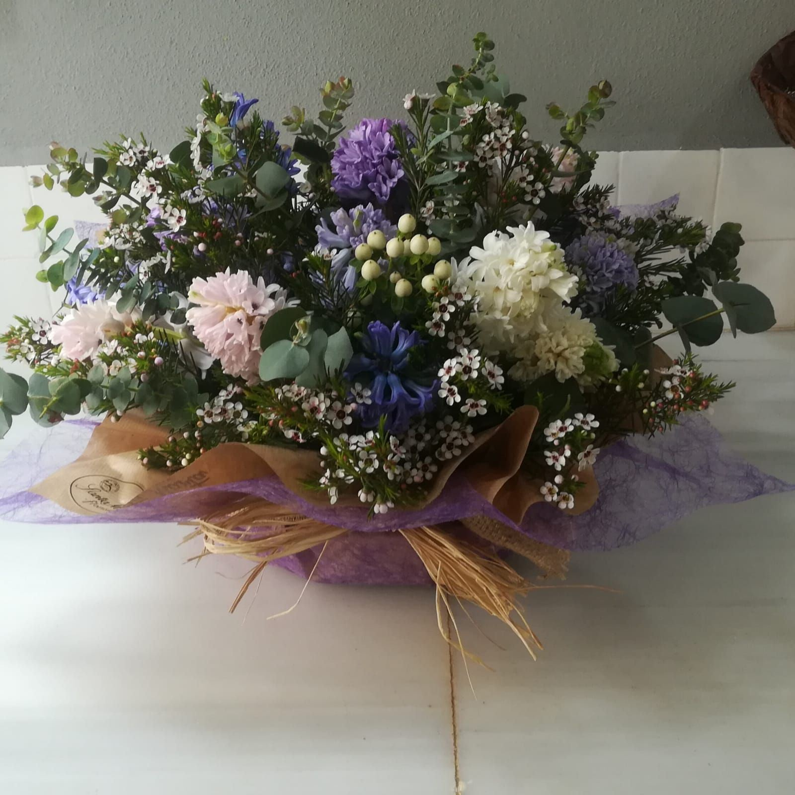
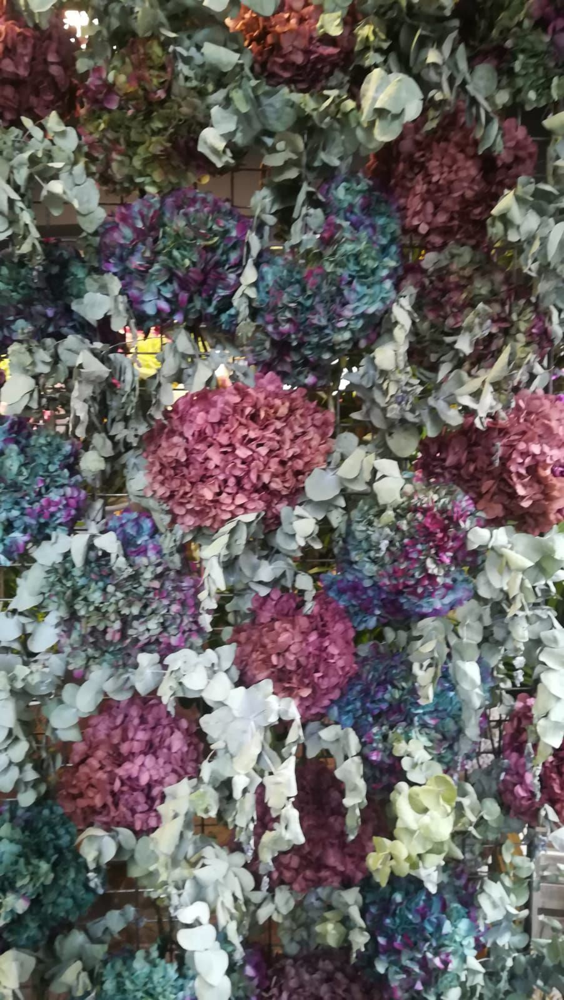
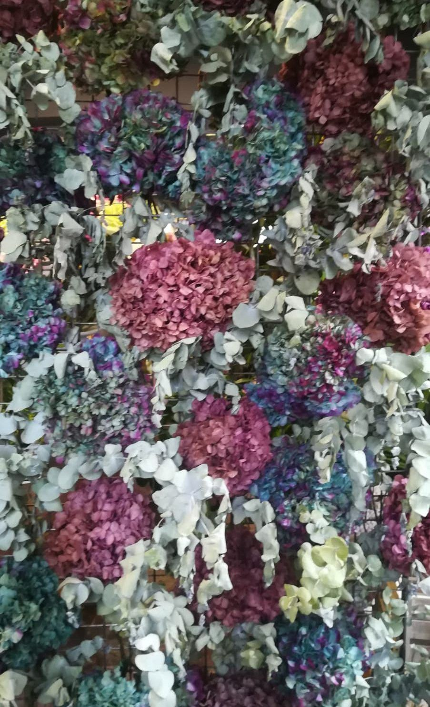

Ramos
Ramos de temporada, de rosas, silvestres o de un solo tipo de flor. Envueltos con papel y lazo, listos para regalar.
Encargar un ramo
Cada ramo se hace en el momento, con la flor que mejor está esa semana.
Trabajamos con una gran variedad de flor traída de España, Holanda y Colombia. Nos adaptamos a los gustos de cada cliente y hacemos todo tipo de arreglos: ramos, centros, cajas de flores y composiciones de flor preservada que duran meses.
Cuéntanos para quién es, qué colores le gustan y cuánto quieres gastar. Nosotros te aconsejamos con más de 70 años de oficio.
Todos nuestros trabajos son por encargo y se pueden personalizar.
Ramos de temporada, de rosas, silvestres o de un solo tipo de flor. Envueltos con papel y lazo, listos para regalar.
Encargar un ramo
Centros de mesa, cajas de madera y cestas para casa, la oficina o una celebración. Se entregan ya colocados, sin necesidad de jarrón.
Encargar un centro
Flor natural tratada para que conserve su aspecto durante meses sin agua. Un regalo que dura y no necesita cuidados.
Pedir informaciónSin formularios ni registros: hablas directamente con la floristería.
Por WhatsApp al 616 524 337 o al teléfono 957 470 818. También puedes pasarte por la tienda.
Dinos la ocasión, el presupuesto y si tienes una foto de referencia. Te proponemos el ramo.
Recógelo en la calle Osario o te lo llevamos a domicilio en Córdoba. Fuera de Córdoba, con Interflora.
Cada ramo se hace a medida de tu presupuesto. Estos son los precios de partida.
Reparto a domicilio en Córdoba: [PENDIENTE: precio del reparto].
Pulsa en una foto para verla en grande. Si te gusta una, mándanosla y te hacemos una parecida.














Sí. Si nos escribes con tiempo dentro del horario de la tienda, lo preparamos y lo entregamos en Córdoba el mismo día.
Sí, a través de Interflora llegamos a cualquier ciudad de España y del mundo. Pregúntanos plazos y precio para la ciudad que necesites.
Claro. Dinos el texto al hacer el encargo y lo incluimos con el ramo.
Depende de la flor y el tamaño. Dinos tu presupuesto y te preparamos el mejor ramo posible para esa cantidad.
Mándanos una foto o cuéntanos lo que buscas y te preparamos el ramo.